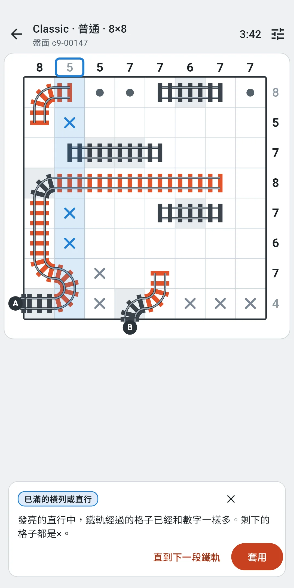
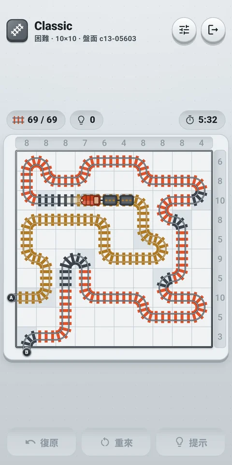
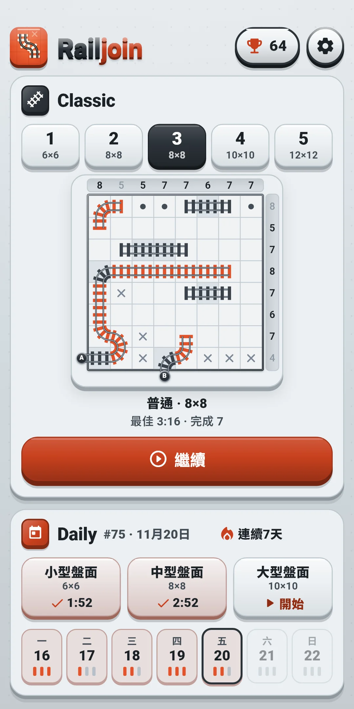
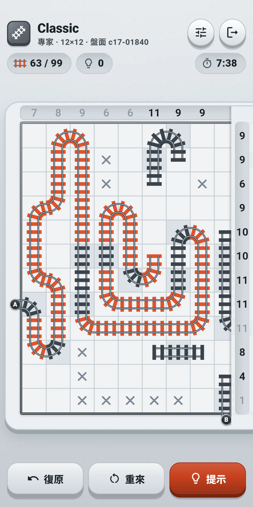
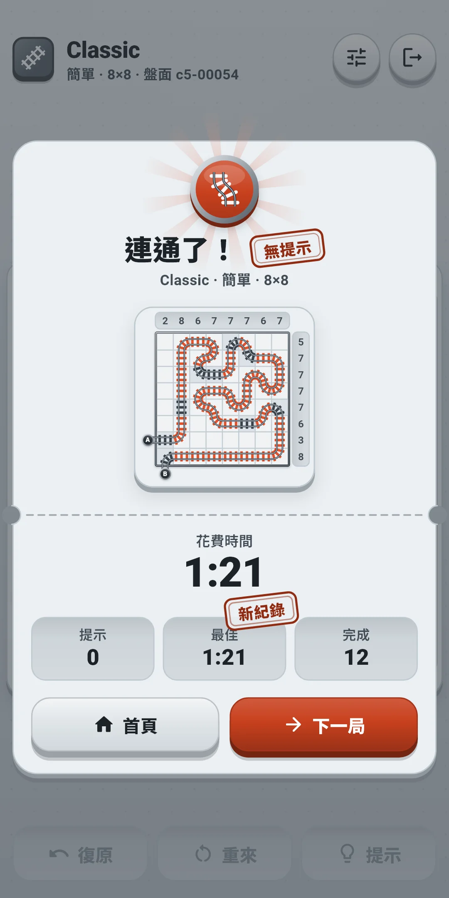
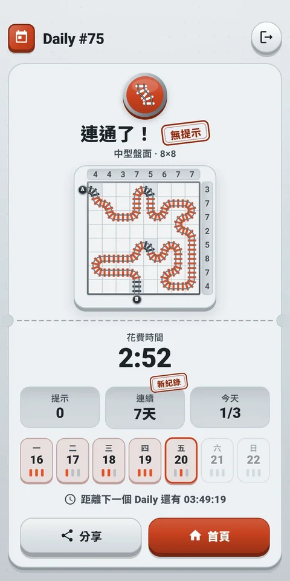
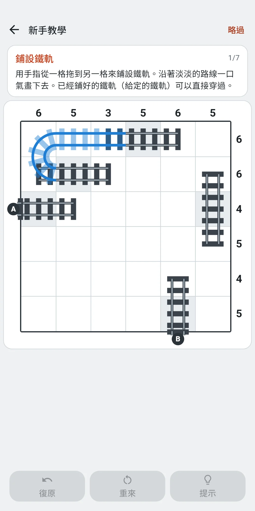

截圖







關於應用程式
| 應用程式名稱 | Railjoin |
|---|---|
| 版本 | 1.0.1 |
| 開發 | Willee Project |
| 支援平台 | Android |
Railjoin 是一款用一條鐵軌把入口 A 連到出口 B 的邏輯謎題。盤面上方和右側的數字，是那一直行、那一橫列裡鐵軌經過的格子數。每個盤面都只有一個答案，不靠猜測、只靠邏輯就能解到最後。
- 沒有生命值，也不統計失誤次數。提示不限次數、免費使用，也沒有時間限制。
- 不需要註冊，也不需要登入。第一次打開時，會先用一個6×6的練習盤面進行新手教學，帶你熟悉操作和規則。點擊略過可以隨時結束。
- 沒有網路也能玩。 只有畫面下方的廣告，以及傳送使用統計和錯誤報告時才會用到網路。
- 語言跟隨裝置設定。支援中文（繁體、簡體）、英文、韓文、日文，也可以在設定中直接選擇。
1. 規則
- 盤面是正方形的格子。每個直行的上方、每個橫列的右側都有一個數字，表示這一直行或這一橫列裡鐵軌經過的格子數。
- 盤面左側是入口 A，下方是出口 B。鐵軌是從 A 到 B 不間斷的一條線。
- 鐵軌經過的格子會與相鄰的兩個格子相連（筆直或轉彎）。沒有分岔、沒有交叉、沒有封閉的環，也不能斜向連接。
- 有幾個格子裡一開始就放著鐵軌（給定的格子）。它們不能擦除或更改。緊鄰 A 和 B 的格子也一定是給定的格子。
- 鐵軌從 A 到 B 連成一條線，除此之外沒有別的鐵軌，並且每一橫列、每一直行的數字都對上，就完成了。×和●不必全部放上。
- 每個盤面都只有一個答案，不靠猜測、只靠邏輯就能解到最後。不會出現必須靠猜才能確定某個格子的盤面。
- 沒有生命值，也不統計失誤。連錯了盤面也不會結束，復原不限次數。
- 最佳用時只計算沒有使用提示的盤面。 不使用提示就解開時，結果上會蓋上無提示印章。
盤面怎麼看
- 數字在盤面上方（直行）和右側（橫列）。入口 A 在盤面外的左側，出口 B 在盤面外的下方，都是圓形標牌。
- 給定的格子底色不同，裡面已經放著鐵軌。給定的鐵軌枕木顏色不同，所以能和自己鋪設的鐵軌（枕木是朱紅色）區分開。
- ×是自己做的標記，表示「這個格子裡沒有鐵軌經過」；●也是自己做的標記，表示「這個格子裡有鐵軌經過（方向還不知道）」。解題時並非必須，但把已經弄清的情況標出來，剩下的格子會更容易看清。
- 某一橫列或某一直行裡鐵軌經過的格子數達到數字時，這個數字會變淡（●也算鐵軌經過的格子）。只靠給定的格子就已經滿足數字的橫列或直行，一開始就是淡的。
- 規則衝突（預設開啟）：超過數字的橫列或直行，其數字外會出現紅色邊框；出現分岔的格子和封閉的環，鐵軌會變紅，格子外會出現紅色邊框。只依據規則來提示，不參考答案。
- 被淡藍色標出的橫列或直行、帶虛線圈的格子，以及虛線，是提示所指的地方。錯誤的標記會用紅色邊框指出（見第4章）。
2. 解題要點
新手教學用一個6×6的盤面教你基礎，分七步：鋪設鐵軌 → 放置× → 放置● → 規則衝突 → 復原 → 提示 → 獨立完成。每一步都會讓要操作的地方亮起，只有亮起的地方才有反應。教學盤面不計入紀錄，全部完成後點擊開始就會進入首頁。提示會用名稱告訴你用了哪種要點。從最容易的開始，如下。
- 只有兩個方向：鐵軌經過的格子，如果鐵軌能出去的方向（開口）只有兩個，就往這兩個方向連接。
- 死路：開口不到兩個的格子，鐵軌無法經過。這個格子是×。
- 已滿的橫列或直行：鐵軌經過的格子已經和數字一樣多的橫列或直行，剩下的格子都是×。
- 剩下全是鐵軌：橫列或直行要達到數字，需要剩下的所有格子時，剩下的格子都有鐵軌經過（●）。
- 防止成環：把同一段鐵軌的兩端連起來會形成封閉的環，所以這兩端之間不連接。
- 防止提前完成：把通向入口的鐵軌和通向出口的鐵軌連起來，從 A 到 B 的路線就結束了。只有連上之後所有數字正好都對上時才連接，數字還沒對上就不連。
- 穿線奇偶：鐵軌每穿過一次橫跨盤面的線（相鄰兩橫列或兩直行之間），就會換到另一側。A 和 B 在這條線的兩側，就穿過奇數次；在同一側，就穿過偶數次。只剩一處可以穿過時，根據到目前為止穿過的次數是奇數還是偶數，就能確定是否在那裡穿過。
- 鄰格推理：把相鄰的格子也考慮進去。如果開口只有兩個的格子裡有鐵軌經過，就會一直連到相鄰的格子，使這一橫列或這一直行超過數字，那麼這個格子是×。反過來，如果把某個格子空著，相鄰的格子就會被堵住，使這一橫列或這一直行裡鐵軌能經過的格子比數字還少，那麼這個格子有鐵軌經過（●）。
入門和簡單的盤面用前四個（從只有兩個方向到剩下全是鐵軌）就能解開。普通會出現需要用到防止成環和防止提前完成的盤面，困難會出現需要用到穿線奇偶的盤面，專家會出現需要用到鄰格推理的盤面。更難的要點，會由提示連同理由一起告訴你（見第4章）。
3. 操作
- 鋪設鐵軌：用一根手指從一個格子拖到相鄰的格子，兩個格子之間就會鋪上鐵軌。手指進入相鄰格子中央的方塊（格子寬度的70%）後，才會連到那個格子。在格子邊緣手指抖動也不會誤連，快速拖動跳過的格子，會用手指經過的格子補上。一次拖動可以連很多格，不會斜向連接。
- 折返：鋪設途中沿著剛畫的路線折返，剛鋪上的鐵軌會被擦掉。
- 擦除：從自己已經鋪好的鐵軌上開始拖動，就不是繼續鋪設，而是沿著鐵軌一路擦掉。擦的時候折返，擦掉的鐵軌會恢復；回到起點格子，這次拖動就相當於什麼都沒做。想接著鐵軌末端繼續鋪，但手指落在了末端格子前一格時，只要越過末端格子拖向空格，就不會擦掉鐵軌，而是從末端格子接著鋪。
- 走不過的地方：有×的格子、給定的格子裡鐵軌不經過的邊、盤面外緣，都過不去。給定的鐵軌可以順著走過去，也不會被擦掉。有●的格子不會擋路。
- 拖動時的顯示：目前格子上會出現比手指大的圓環，這個格子所在的橫列和直行會淡淡亮起，它們的數字會加上邊框。這次拖動鋪上的鐵軌顏色不同，手指擋住了也能看出連到了哪裡。
- 放置×和●：每點一下空格，就依× → ● → 清除切換。鐵軌經過的格子和給定的格子上不能放。有×的格子裡不能鋪鐵軌。
- 復原：用盤面下方的復原取消最後一步操作。次數不限，一次拖動、放置一次×或●、一次提示的套用，各只需復原一次。關閉應用程式再打開，復原也能接著用。
- 縮放·移動：用兩根手指張開、捏合來放大縮小，兩根手指一起拖動來移動盤面。一根手指不會移動盤面，始終用來鋪設鐵軌或點擊。第二根手指一碰到螢幕，正在進行的拖動就會作廢，像沒發生過一樣，所有手指抬起之前不接受其他操作。所以用來縮放的手指不會鋪出鐵軌或放上×。
- 格子太小的盤面：整個盤面顯示時格子會太小的盤面（多數手機上是專家 12×12，螢幕較窄的手機上困難 10×10 也一樣）會放大後打開。先顯示入口 A 一側，用兩根手指捏合就能看到整個盤面。放大後拖動時，手指碰到螢幕邊緣，盤面會自動往那邊移動。上方和右側的數字在放大移動時也會貼在螢幕邊緣跟著走，入口和出口的標牌隨盤面一起移動。
- 按住放大：盤面縮小、格子看起來太小的時候（一個格子小於約 5 公釐），只能看。用一根手指按下再抬起，碰到的位置會在0.35秒內慢慢放大。鋪設鐵軌和放置×、●都在放大後的盤面上進行。開啟減少特效時，會不帶動畫直接放大。
- 鐵軌連完後，會顯示整個盤面，光從 A 跑到 B，接著小火車沿著鐵軌開過去，然後顯示結果。不想等的話，點一下盤面就能直接看結果（關閉完成時的火車或開啟減少特效時，不會有火車，直接顯示結果）。
頂部列左側是模式圖示和標題（Classic、Daily #12），下面的小字是等級、盤面大小和盤面編號（Daily 是盤面種類、盤面大小和盤面編號）。右側是快速設定按鈕，最右端是門形的離開按鈕。盤面正上方的一排小格，從左起顯示鐵軌格數（兩側都已連接的格子 / 答案的鐵軌格子）和用過的提示次數，最右端顯示時間（可以在設定中用顯示時間隱藏）。
| 按鈕 | 作用 |
|---|---|
| 快速設定 | 打開一個面板，不離開遊戲畫面就能更改效果和輔助功能（見第5、8章）。往下拉或點擊面板外就能關閉 |
| 離開（門形） | 回到首頁。正在解的盤面會自動儲存 |
盤面下方的工具列：
| 按鈕 | 作用 |
|---|---|
| 復原 | 取消最後一步操作。沒有可復原的內容時會變淡、不能點擊 |
| 重來 | 打開選擇這一局從頭開始或新的一局的面板（見下） |
| 提示 | 告訴你下一步和理由（見第4章）。用過提示後會帶上次數，例如提示 3 |
重來面板：
| 選項 | 內容 |
|---|---|
| 這一局從頭開始 | 擦掉所有鋪上的鐵軌和×、●，也清空復原紀錄。Classic 的用時和提示也從頭算，Daily 則繼續累計當天的用時和提示。還沒有開始操作的盤面會變淡、不能點擊 |
| 新的一局（Classic） | 放棄這一局，換一局同等級的盤面。放棄的盤面不算完成。Daily 沒有這一項 |
4. 提示
提示按鈕會告訴你解題的下一步，並說明理由。提示不限次數，免費使用。提示氣泡出現在下方工具列的位置，會暫時蓋住工具列。氣泡如果會擋住提示所指的格子、橫列、直行或數字，就會移到盤面上方，這時工具列會重新顯示。
按鈕要依序按：提示 → 顯示更多 → 套用。
- 第一步：點擊提示，只會告訴你要看的地方。作為依據的橫列或直行會蓋上淡藍色，數字外加邊框，作為依據的格子會加上虛線圈（穿線奇偶會畫出一條橫跨盤面的虛線）。氣泡上的名稱是所用的要點（見第2章）。例如：「比較發亮的橫列的數字和鐵軌經過的格子。」
- 第二步：點擊顯示更多，要確定的內容會淡淡地顯示在盤面上，同時給出理由。要鋪的鐵軌顯示為淡淡的鐵軌，要放的×、●顯示為淡淡的×、●，不連接的邊顯示為一小段短槓。理由裡不用橫列、直行的編號，而是指向發亮的地方。例如：「發亮的橫列中，鐵軌經過的格子已經和數字一樣多。剩下的格子都是×。」
- 第三步：點擊套用，會照此鋪上鐵軌或放上×、●。復原一次即可還原。
- 直到下一段鐵軌（第二步時）：一次放上直到下一個鋪設鐵軌的步驟之前的所有×、●，然後直接顯示下一個鋪設鐵軌的步驟的理由。復原一次即可還原。
- 如果有錯誤的標記，會先指出它們（名稱錯誤的鐵軌、錯誤的×、錯誤的●）。不在答案裡的鐵軌、放在答案鐵軌所在格子上的×、放在答案裡沒有鐵軌的格子上的●，會從最先放下的開始逐個指出。會直接進入第二步，點擊套用就會擦掉那個標記。
- 如果前面還有盤面上看不到的步驟，會在理由前加上「首先：…」，把那個理由一併說明。
- 提示只根據給定的格子和你鋪的正確鐵軌來推理。你自己放的×、●不會被當作依據，所以即使一個×、●也沒放，或者放錯了，提示也永遠是對的。盤面上已經全部看得到的步驟會被跳過。
- 用過的提示次數會顯示在提示按鈕、盤面正上方的小格和結果裡，也會寫進 Daily 的分享文字。請求提示時（第一步）算一次。顯示更多、套用、直到下一段鐵軌不另算，關閉後再請求會多算一次。
- 點擊氣泡上的關閉（X），或者在盤面上鋪鐵軌、放×、●，或者復原，提示就會關閉。
5. 輔助功能
在設定的輔助功能中開關。遊戲中可以用快速設定馬上更改。
- 顯示規則衝突（預設開啟）：顯示超過數字的橫列或直行、出現分岔的格子和封閉的環（見第1章）。
- 立即顯示失誤（預設關閉）：馬上用紅色圓圈裡的×標出三種錯誤：與答案不同的鐵軌、放在答案鐵軌所在格子上的×、放在答案裡沒有鐵軌的格子上的●（和提示的「錯誤的標記」是同樣的三種）。關閉時，錯誤的標記要等提示指出才會告訴你。開啟它解開的盤面，只要沒用提示，也算無提示，並計入最佳用時。
- 顯示時間（預設開啟）：在盤面正上方那排小格的最右端顯示時間。關閉後只是不顯示，時間仍在計算。解開的盤面的用時會顯示在結果裡。
新手教學的盤面不受這些設定影響：始終顯示規則衝突，不使用立即顯示失誤。
6. 模式
首頁
上方是應用程式圖示和名稱，右側是帶獎盃和完成盤面數的紀錄按鈕，以及齒輪形狀的設定按鈕。下面依序是 Classic 卡片和 Daily 卡片。想再玩一次新手教學，可以在設定的輔助功能中選擇重玩教學（見第8章）。
Classic — 自選等級，不限時
- 在首頁的 Classic 卡片上選擇等級，再點擊下方的大按鈕（開始，有進行中的盤面時是繼續）。五個等級方塊顯示等級編號（1到5）和盤面大小，選中的等級顏色較深。下面的盤面預覽顯示進行中的盤面或下一局的空盤面，左右滑動可以換到相鄰的等級。再下面是等級名稱和盤面大小、最佳用時（只算沒有使用提示的盤面）和完成的盤面數。第一次玩建議從入門（1）開始。
- 等級依盤面大小和解題所需的最難要點（見第2章）劃分。所有等級一開始就開放，每個等級有2,000個盤面。
| 等級 | 盤面大小 | 所需的最難要點 |
|---|---|---|
| 入門 | 6×6 | 前四個（只有兩個方向到剩下全是鐵軌） |
| 簡單 | 8×8 | 前四個 |
| 普通 | 8×8 | 防止成環、防止提前完成 |
| 困難 | 10×10 | 穿線奇偶 |
| 專家 | 12×12 | 鄰格推理 |
- 盤面會從還沒解開的盤面裡隨機選出。解開過的盤面不會再出現；某個等級的盤面全部解開後，會從最早解開的那一局開始再次出現。
- 連完鐵軌後，會有聲音和震動（開啟時），小火車從 A 開到 B，然後出現結果卡片（連通了！）。上面有連完鐵軌的盤面圖、用時、提示、最佳（只算沒有使用提示的盤面；超過原來的紀錄時會蓋上新紀錄印章）和完成的盤面數。沒有使用提示就解開時會蓋上無提示印章。點擊下一局會接著出同一等級的下一局，點擊首頁回到首頁。
- 進行中的盤面會自動儲存。離開或關閉再打開應用程式後，每個等級都能接著解。打開盤面畫面後開始計時，離開應用程式或離開畫面期間不計時。沒有操作就離開的盤面不會留下用時，原樣等著你。
Daily — 今天的三個盤面
- 每天所有人拿到同樣的三個盤面：小型盤面（6×6）、中型盤面（8×8）、大型盤面（10×10），難度分別與入門、普通、困難等級相同。全世界的人在同一天解同樣的盤面（以裝置日期為準）。新的 Daily 會在裝置時間的午夜開放，應用程式開著過了午夜，首頁會自動換成新的一天。
- 每個盤面分開解，結果也各自儲存。規則和 Classic 一樣（沒有生命值，提示不限次數）。
- 沒有時間限制，到目前為止的用時顯示在盤面畫面的上方（可以在設定中隱藏）。
- 當天之內離開再回來也能接著解。即使選擇這一局從頭開始，當天的用時和提示也會繼續累計（重來時只有這一項）。日期變了以後，沒解完的昨天的盤面會消失，新的盤面會開放。
- 當天的三個盤面只要完成其中一個，這一天就計入連續；中間空一天就會中斷。
- 首頁的 Daily 卡片會顯示 Daily 編號和今天的日期、連續天數（🔥）、今天的三個盤面和本週七天的小格。每個盤面方塊顯示盤面名稱、大小和狀態（開始、繼續，解開的盤面顯示 ✓ 和用時），點擊後可以開始解，或查看已解開盤面的結果。本週的小格顯示星期和日期，以及代表當天三個盤面的三根枕木。解開的盤面的枕木是朱紅色，今天的小格帶朱紅色邊框。
- 結果畫面會顯示連完鐵軌的盤面圖、用時、提示、連續（天數）、今天完成的盤面數（例如 2/3）、本週七天的小格和距下次 Daily 的時間。沒有使用提示就解開時會蓋上無提示印章，剛解開的盤面使連續超過最長連續時，連續一欄會蓋上新紀錄印章。可以用分享傳送結果（一次一個盤面）。例如：
Railjoin Daily #12 · 中型盤面 ✅ 3:41 提示 0次 🔥 連續5天 https://play.google.com/store/apps/details?id=net.willee.railjoin&utm_source=share&utm_campaign=daily
#12是 Daily 的編號，旁邊是盤面種類和用時（分:秒，超過一小時則為時:分:秒）。第一行的「Railjoin Daily」在任何語言中都一樣。第二行是提示次數，第三行是連續紀錄（兩天以上才顯示）。最後一行是 Google Play 上 Railjoin 的連結，方便收到的人找到這款遊戲。盤面本身不會放進去，因為會洩露答案。第一個 Daily 開放的那天是 #1，之後每天加一，編號和盤面種類相同就是同樣的盤面。
7. 紀錄
點擊首頁右上角獎盃形狀的紀錄按鈕打開（按鈕上也顯示完成的盤面數）。
- 最上方：Classic 和 Daily 合計的完成盤面數，以及各模式的數量
- Daily：連續、最長連續、完成天數、完成的盤面數。中間空一天，連續就會中斷。
- Classic：各等級（及盤面大小）的完成數、無提示完成的數量、最佳用時（只算沒有使用提示的盤面）、平均用時（所有完成的盤面）。還沒有完成盤面的等級，用時顯示為「-」。
8. 設定
點擊首頁右上角的設定（齒輪）打開。分為三組。遊戲中可以用快速設定按鈕馬上更改前兩組。
聲音與效果
| 項目 | 內容 |
|---|---|
| 音效 | 開關鋪設和擦除鐵軌、分開的鐵軌接上、放置和清除×、●、橫列或直行的數字達標、規則衝突、提示、復原、盤面完成、行駛中的火車、結果、按鈕等的聲音 |
| 震動 | 鋪設鐵軌時短促，擦除鐵軌或放置×、●時更輕，橫列或直行的數字達標時兩下，規則衝突時短促而沉重的兩下，連完鐵軌時較長。點擊按鈕時也會輕輕震動。可以開關 |
| 減少特效 | 一次減少所有特效。開啟期間，下面的連接時的光效、完成時的火車和車票紙屑都相當於關閉（開關不能點，原來的值會保留），按住放大也會不帶動畫直接放大 |
| 連接時的光效 | 鋪設鐵軌的格子會短暫發亮，接縫處濺出火花。分開的鐵軌接上、橫列或直行填滿、連完鐵軌時的光效也一起開關。預設開啟 |
| 完成時的火車 | 連通後，在顯示結果前火車會從 A 開到 B。關閉後直接顯示結果。預設開啟 |
| 車票紙屑 | 結果畫面上車票紙屑會迸發三次並飄落。預設開啟 |
沒有整個盤面晃動的特效。
輔助功能
| 項目 | 內容 |
|---|---|
| 顯示規則衝突 | 顯示超過數字的橫列或直行、分岔和封閉的環。預設開啟 |
| 立即顯示失誤 | 馬上標出與答案不同的鐵軌和×、●。預設關閉 |
| 顯示時間 | 在盤面正上方那排小格顯示時間。預設開啟 |
| 重玩教學 | 再玩一次新手教學。練習盤面不計入紀錄，完成或略過後回到設定。快速設定裡沒有這一項 |
一般
| 項目 | 內容 |
|---|---|
| 語言 | 跟隨系統（預設），或從清單（English · 日本語 · 한국어 · 简体中文 · 繁體中文）中直接選擇 |
| 隱私權選項 | 再次打開廣告同意視窗。只在需要同意的地區（例如歐洲）顯示 |
| 關於 | 版本、本說明（玩法說明）、在 Google Play 上評分（Google Play 上的 Railjoin 頁面）、隱私權政策、開放原始碼授權。下方的更多遊戲是 Willee Project 的其他遊戲，輕觸後會開啟 Google Play（還有查看全部遊戲） |
螢幕顏色跟隨裝置的深色模式設定。應用程式內沒有單獨的開關。
9. 廣告與紀錄的保存
- 畫面最下方有一條橫幅廣告。在盤面畫面中，工具列和廣告之間留有間隔，避免誤點廣告。在新手教學中會撤下廣告，只保留位置。廣告只有這一條。遊戲沒有網路也能玩，網路只用於廣告、使用統計和錯誤報告。
- 在需要同意的地區（例如歐洲），第一次打開應用程式時會出現廣告同意視窗。之後可以在設定的隱私權選項中更改。
- 應用程式內沒有任何付費項目。
- 紀錄和設定儲存在裝置中。如果開啟了裝置的 Google 備份（Android 自動備份），會一起備份，換裝置後也能接著玩。解除安裝應用程式會刪除裝置中的紀錄。
- 詳情請參閱隱私權政策。